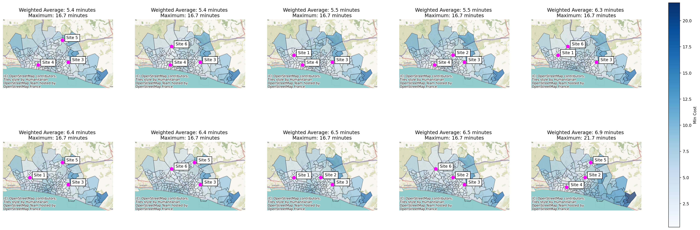
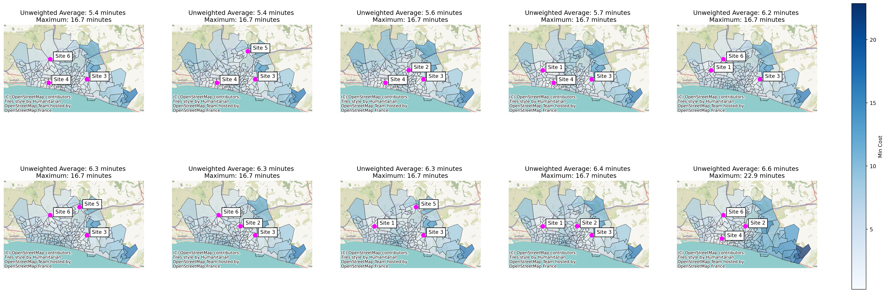
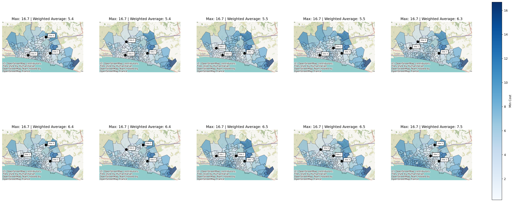
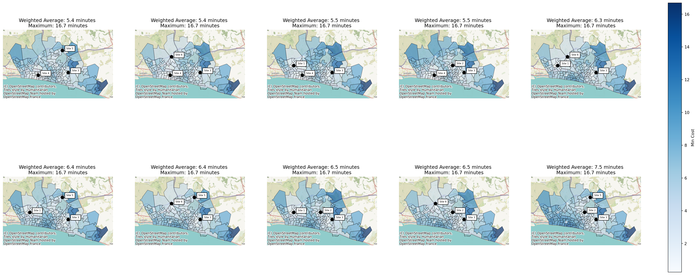

from lokigi.site import SiteProblem
problem = SiteProblem()
problem.add_demand(
"../../../sample_data/brighton_demand.csv",
demand_col="demand", location_id_col="LSOA"
)
problem.add_sites(
"../../../sample_data/brighton_sites.geojson",
candidate_id_col="site"
)
problem.add_travel_matrix(
travel_matrix_df="../../../sample_data/brighton_travel_matrix_driving.csv",
source_col="LSOA",
from_unit="seconds",
to_unit="minutes"
)
problem.add_region_geometry_layer(
"https://github.com/hsma-programme/h6_3d_facility_location_problems/raw/refs/heads/main/h6_3d_facility_location_problems/example_code/LSOA_2011_Boundaries_Super_Generalised_Clipped_BSC_EW_V4.geojson",
common_col="LSOA11NM"
)P-center, P-median, and p-median variants
Lokigi supports a number of problem types:
- P Center (minimizing the maximum distance anyone travels)
- Simple P Median (minimizing the average distance travelled)
- Hybrid variant: can set a maximum travel time constraint
- P Median (minimizing the average distance travelled, weighted by demand or another factor)
- Hybrid variant: can set a maximum travel time constraint
Let’s explore these.
First, we set up our lokigi problem.
Let’s start by solving the p-median problem for 3 sites.
Here, the travel time will be weighted by the demand dataframe.
Let’s imagine we’re setting up a gynaecology clinic. Most of the patients are between 13 and 50.
In our area, there is a town that is very popular with retirees - there are far fewer people in our patient age group within that town than we would expect for an area of that size otherwise. This town is currently quite a long way from a gynaecology clinic.
In an unweighted p-median problem, the town would still have the same impact on our decision-making regardless. It might suggest that a site in that area would be a good idea.
However, in a standard p-median problem, because of the demand being lower, the impact of that town would be less. The travel time for those areas would be weighted by the demand, and as the demand is lower, this town would have less of an impact when working out what is the best possible combination of sites.
p_median_3 = problem.solve(p=3, objectives="p_median")
p_median_3.show_solutions()| site_names | site_indices | coverage_threshold | weighted_average | unweighted_average | 90th_percentile | max | proportion_within_coverage_threshold | problem_df | |
|---|---|---|---|---|---|---|---|---|---|
| 0 | None | [2, 3, 4] | None | 5.37 | 5.45 | 8.50 | 16.69 | 0.0 | LSOA L... |
| 1 | None | [2, 3, 5] | None | 5.38 | 5.36 | 8.06 | 16.69 | 0.0 | LSOA L... |
| 2 | None | [0, 2, 3] | None | 5.53 | 5.67 | 9.36 | 16.69 | 0.0 | LSOA L... |
| 3 | None | [1, 2, 3] | None | 5.54 | 5.59 | 9.00 | 16.69 | 0.0 | LSOA L... |
| 4 | None | [0, 2, 5] | None | 6.32 | 6.21 | 9.33 | 16.69 | 0.0 | LSOA L... |
| 5 | None | [0, 2, 4] | None | 6.35 | 6.32 | 9.70 | 16.69 | 0.0 | LSOA L... |
| 6 | None | [2, 4, 5] | None | 6.42 | 6.29 | 9.26 | 16.69 | 0.0 | LSOA L... |
| 7 | None | [0, 1, 2] | None | 6.47 | 6.39 | 9.77 | 16.69 | 0.0 | LSOA L... |
| 8 | None | [1, 2, 5] | None | 6.51 | 6.31 | 9.45 | 16.69 | 0.0 | LSOA L... |
| 9 | None | [1, 3, 4] | None | 6.92 | 6.76 | 11.32 | 21.71 | 0.0 | LSOA L... |
| 10 | None | [1, 3, 5] | None | 6.98 | 6.64 | 11.58 | 22.86 | 0.0 | LSOA L... |
| 11 | None | [0, 3, 4] | None | 7.04 | 6.81 | 12.26 | 21.71 | 0.0 | LSOA L... |
| 12 | None | [3, 4, 5] | None | 7.06 | 6.73 | 12.26 | 21.71 | 0.0 | LSOA L... |
| 13 | None | [0, 1, 3] | None | 7.13 | 6.92 | 11.93 | 23.92 | 0.0 | LSOA L... |
| 14 | None | [1, 2, 4] | None | 7.48 | 7.46 | 11.57 | 16.69 | 0.0 | LSOA L... |
| 15 | None | [0, 1, 4] | None | 7.95 | 7.66 | 11.67 | 21.71 | 0.0 | LSOA L... |
| 16 | None | [0, 1, 5] | None | 7.99 | 7.54 | 11.90 | 22.86 | 0.0 | LSOA L... |
| 17 | None | [1, 4, 5] | None | 8.03 | 7.65 | 11.67 | 21.71 | 0.0 | LSOA L... |
| 18 | None | [0, 3, 5] | None | 8.08 | 7.69 | 13.72 | 22.86 | 0.0 | LSOA L... |
| 19 | None | [0, 4, 5] | None | 8.16 | 7.70 | 12.65 | 21.71 | 0.0 | LSOA L... |
p_median_3.plot_n_best_combinations()(<Figure size 2880x1152 with 11 Axes>,
array([<Axes: title={'center': 'Weighted Average: 5.4 minutes \nMaximum: 16.7 minutes'}>,
<Axes: title={'center': 'Weighted Average: 5.4 minutes \nMaximum: 16.7 minutes'}>,
<Axes: title={'center': 'Weighted Average: 5.5 minutes \nMaximum: 16.7 minutes'}>,
<Axes: title={'center': 'Weighted Average: 5.5 minutes \nMaximum: 16.7 minutes'}>,
<Axes: title={'center': 'Weighted Average: 6.3 minutes \nMaximum: 16.7 minutes'}>,
<Axes: title={'center': 'Weighted Average: 6.4 minutes \nMaximum: 16.7 minutes'}>,
<Axes: title={'center': 'Weighted Average: 6.4 minutes \nMaximum: 16.7 minutes'}>,
<Axes: title={'center': 'Weighted Average: 6.5 minutes \nMaximum: 16.7 minutes'}>,
<Axes: title={'center': 'Weighted Average: 6.5 minutes \nMaximum: 16.7 minutes'}>,
<Axes: title={'center': 'Weighted Average: 6.9 minutes \nMaximum: 21.7 minutes'}>],
dtype=object))
Let’s now run the simple - unweighted - p-median variant.
simple_p_median_3 = problem.solve(p=3, objectives="simple_p_median")
simple_p_median_3.show_solutions()| site_names | site_indices | coverage_threshold | weighted_average | unweighted_average | 90th_percentile | max | proportion_within_coverage_threshold | problem_df | |
|---|---|---|---|---|---|---|---|---|---|
| 0 | None | [2, 3, 5] | None | 5.38 | 5.36 | 8.06 | 16.69 | 0.0 | LSOA L... |
| 1 | None | [2, 3, 4] | None | 5.37 | 5.45 | 8.50 | 16.69 | 0.0 | LSOA L... |
| 2 | None | [1, 2, 3] | None | 5.54 | 5.59 | 9.00 | 16.69 | 0.0 | LSOA L... |
| 3 | None | [0, 2, 3] | None | 5.53 | 5.67 | 9.36 | 16.69 | 0.0 | LSOA L... |
| 4 | None | [0, 2, 5] | None | 6.32 | 6.21 | 9.33 | 16.69 | 0.0 | LSOA L... |
| 5 | None | [2, 4, 5] | None | 6.42 | 6.29 | 9.26 | 16.69 | 0.0 | LSOA L... |
| 6 | None | [1, 2, 5] | None | 6.51 | 6.31 | 9.45 | 16.69 | 0.0 | LSOA L... |
| 7 | None | [0, 2, 4] | None | 6.35 | 6.32 | 9.70 | 16.69 | 0.0 | LSOA L... |
| 8 | None | [0, 1, 2] | None | 6.47 | 6.39 | 9.77 | 16.69 | 0.0 | LSOA L... |
| 9 | None | [1, 3, 5] | None | 6.98 | 6.64 | 11.58 | 22.86 | 0.0 | LSOA L... |
| 10 | None | [3, 4, 5] | None | 7.06 | 6.73 | 12.26 | 21.71 | 0.0 | LSOA L... |
| 11 | None | [1, 3, 4] | None | 6.92 | 6.76 | 11.32 | 21.71 | 0.0 | LSOA L... |
| 12 | None | [0, 3, 4] | None | 7.04 | 6.81 | 12.26 | 21.71 | 0.0 | LSOA L... |
| 13 | None | [0, 1, 3] | None | 7.13 | 6.92 | 11.93 | 23.92 | 0.0 | LSOA L... |
| 14 | None | [1, 2, 4] | None | 7.48 | 7.46 | 11.57 | 16.69 | 0.0 | LSOA L... |
| 15 | None | [0, 1, 5] | None | 7.99 | 7.54 | 11.90 | 22.86 | 0.0 | LSOA L... |
| 16 | None | [1, 4, 5] | None | 8.03 | 7.65 | 11.67 | 21.71 | 0.0 | LSOA L... |
| 17 | None | [0, 1, 4] | None | 7.95 | 7.66 | 11.67 | 21.71 | 0.0 | LSOA L... |
| 18 | None | [0, 3, 5] | None | 8.08 | 7.69 | 13.72 | 22.86 | 0.0 | LSOA L... |
| 19 | None | [0, 4, 5] | None | 8.16 | 7.70 | 12.65 | 21.71 | 0.0 | LSOA L... |
Note that lokigi recognises we ran a simple p median, and adjusts the subplot titles accordingly.
simple_p_median_3.plot_n_best_combinations()(<Figure size 2880x1152 with 11 Axes>,
array([<Axes: title={'center': 'Unweighted Average: 5.4 minutes \nMaximum: 16.7 minutes'}>,
<Axes: title={'center': 'Unweighted Average: 5.4 minutes \nMaximum: 16.7 minutes'}>,
<Axes: title={'center': 'Unweighted Average: 5.6 minutes \nMaximum: 16.7 minutes'}>,
<Axes: title={'center': 'Unweighted Average: 5.7 minutes \nMaximum: 16.7 minutes'}>,
<Axes: title={'center': 'Unweighted Average: 6.2 minutes \nMaximum: 16.7 minutes'}>,
<Axes: title={'center': 'Unweighted Average: 6.3 minutes \nMaximum: 16.7 minutes'}>,
<Axes: title={'center': 'Unweighted Average: 6.3 minutes \nMaximum: 16.7 minutes'}>,
<Axes: title={'center': 'Unweighted Average: 6.3 minutes \nMaximum: 16.7 minutes'}>,
<Axes: title={'center': 'Unweighted Average: 6.4 minutes \nMaximum: 16.7 minutes'}>,
<Axes: title={'center': 'Unweighted Average: 6.6 minutes \nMaximum: 22.9 minutes'}>],
dtype=object))
Let’s now consider a p center problem.
In p center problems, we want to minimize the maximum distance anyone will travel. Therefore, we might not be so
In the event of ties, lokigi will also sort on the weighted average travel time.
Because of how lokigi works behind the scenes, if you haven’t provided a demand dataframe, your unweighted average and weighted average times would be identical.
p_center_3 = problem.solve(p=3, objectives="p_center")
p_center_3.show_solutions()| site_names | site_indices | coverage_threshold | weighted_average | unweighted_average | 90th_percentile | max | proportion_within_coverage_threshold | problem_df | |
|---|---|---|---|---|---|---|---|---|---|
| 0 | None | [2, 3, 4] | None | 5.37 | 5.45 | 8.50 | 16.69 | 0.0 | LSOA L... |
| 1 | None | [2, 3, 5] | None | 5.38 | 5.36 | 8.06 | 16.69 | 0.0 | LSOA L... |
| 2 | None | [0, 2, 3] | None | 5.53 | 5.67 | 9.36 | 16.69 | 0.0 | LSOA L... |
| 3 | None | [1, 2, 3] | None | 5.54 | 5.59 | 9.00 | 16.69 | 0.0 | LSOA L... |
| 4 | None | [0, 2, 5] | None | 6.32 | 6.21 | 9.33 | 16.69 | 0.0 | LSOA L... |
| 5 | None | [0, 2, 4] | None | 6.35 | 6.32 | 9.70 | 16.69 | 0.0 | LSOA L... |
| 6 | None | [2, 4, 5] | None | 6.42 | 6.29 | 9.26 | 16.69 | 0.0 | LSOA L... |
| 7 | None | [0, 1, 2] | None | 6.47 | 6.39 | 9.77 | 16.69 | 0.0 | LSOA L... |
| 8 | None | [1, 2, 5] | None | 6.51 | 6.31 | 9.45 | 16.69 | 0.0 | LSOA L... |
| 9 | None | [1, 2, 4] | None | 7.48 | 7.46 | 11.57 | 16.69 | 0.0 | LSOA L... |
| 10 | None | [1, 3, 4] | None | 6.92 | 6.76 | 11.32 | 21.71 | 0.0 | LSOA L... |
| 11 | None | [0, 3, 4] | None | 7.04 | 6.81 | 12.26 | 21.71 | 0.0 | LSOA L... |
| 12 | None | [3, 4, 5] | None | 7.06 | 6.73 | 12.26 | 21.71 | 0.0 | LSOA L... |
| 13 | None | [0, 1, 4] | None | 7.95 | 7.66 | 11.67 | 21.71 | 0.0 | LSOA L... |
| 14 | None | [1, 4, 5] | None | 8.03 | 7.65 | 11.67 | 21.71 | 0.0 | LSOA L... |
| 15 | None | [0, 4, 5] | None | 8.16 | 7.70 | 12.65 | 21.71 | 0.0 | LSOA L... |
| 16 | None | [1, 3, 5] | None | 6.98 | 6.64 | 11.58 | 22.86 | 0.0 | LSOA L... |
| 17 | None | [0, 1, 5] | None | 7.99 | 7.54 | 11.90 | 22.86 | 0.0 | LSOA L... |
| 18 | None | [0, 3, 5] | None | 8.08 | 7.69 | 13.72 | 22.86 | 0.0 | LSOA L... |
| 19 | None | [0, 1, 3] | None | 7.13 | 6.92 | 11.93 | 23.92 | 0.0 | LSOA L... |
We can adjust our subplot title to make the maximum time the thing that’s displayed first.
The columns of the solution dataframe need to be referred to as
solution[colname]
Available options are
solution['unweighted_average'] solution['weighted_average'] solution['90th_percentile'] solution['max'] solution['proportion_within_coverage_threshold']
p_center_3.plot_n_best_combinations(subplot_title="Max: {solution['max'].values[0]:.1f} | Weighted Average: {solution['weighted_average'].values[0]:.1f}")(<Figure size 2880x1152 with 11 Axes>,
array([<Axes: title={'center': 'Max: 16.7 | Weighted Average: 5.4'}>,
<Axes: title={'center': 'Max: 16.7 | Weighted Average: 5.4'}>,
<Axes: title={'center': 'Max: 16.7 | Weighted Average: 5.5'}>,
<Axes: title={'center': 'Max: 16.7 | Weighted Average: 5.5'}>,
<Axes: title={'center': 'Max: 16.7 | Weighted Average: 6.3'}>,
<Axes: title={'center': 'Max: 16.7 | Weighted Average: 6.4'}>,
<Axes: title={'center': 'Max: 16.7 | Weighted Average: 6.4'}>,
<Axes: title={'center': 'Max: 16.7 | Weighted Average: 6.5'}>,
<Axes: title={'center': 'Max: 16.7 | Weighted Average: 6.5'}>,
<Axes: title={'center': 'Max: 16.7 | Weighted Average: 7.5'}>],
dtype=object))
Hybrid p-median - p-median with a maximum time constraint
Note
Note that at present this only works with the brute-force solver.
If you want to weight solutions by the weighted or unweighted average but rule out any solutions that penalise those further from the sites too much, you can choose hybrid_p_median (for scoring on weighted average) or hybrid_simple_p_median (for scoring on unweighted average).
hybrid_p_median_3 = problem.solve(p=3, objectives="hybrid_p_median", max_value_cutoff=17)
hybrid_p_median_3.show_solutions()| site_names | site_indices | coverage_threshold | weighted_average | unweighted_average | 90th_percentile | max | proportion_within_coverage_threshold | problem_df | |
|---|---|---|---|---|---|---|---|---|---|
| 0 | None | [2, 3, 4] | None | 5.37 | 5.45 | 8.50 | 16.69 | 0.0 | LSOA L... |
| 1 | None | [2, 3, 5] | None | 5.38 | 5.36 | 8.06 | 16.69 | 0.0 | LSOA L... |
| 2 | None | [0, 2, 3] | None | 5.53 | 5.67 | 9.36 | 16.69 | 0.0 | LSOA L... |
| 3 | None | [1, 2, 3] | None | 5.54 | 5.59 | 9.00 | 16.69 | 0.0 | LSOA L... |
| 4 | None | [0, 2, 5] | None | 6.32 | 6.21 | 9.33 | 16.69 | 0.0 | LSOA L... |
| 5 | None | [0, 2, 4] | None | 6.35 | 6.32 | 9.70 | 16.69 | 0.0 | LSOA L... |
| 6 | None | [2, 4, 5] | None | 6.42 | 6.29 | 9.26 | 16.69 | 0.0 | LSOA L... |
| 7 | None | [0, 1, 2] | None | 6.47 | 6.39 | 9.77 | 16.69 | 0.0 | LSOA L... |
| 8 | None | [1, 2, 5] | None | 6.51 | 6.31 | 9.45 | 16.69 | 0.0 | LSOA L... |
| 9 | None | [1, 2, 4] | None | 7.48 | 7.46 | 11.57 | 16.69 | 0.0 | LSOA L... |
Here, we can see that there are only 10 solutions returned; all other solutions exceed the 17 minute mark for the furthest region from any site.
hybrid_p_median_3.plot_n_best_combinations()(<Figure size 2880x1152 with 11 Axes>,
array([<Axes: title={'center': 'Weighted Average: 5.4 minutes \nMaximum: 16.7 minutes'}>,
<Axes: title={'center': 'Weighted Average: 5.4 minutes \nMaximum: 16.7 minutes'}>,
<Axes: title={'center': 'Weighted Average: 5.5 minutes \nMaximum: 16.7 minutes'}>,
<Axes: title={'center': 'Weighted Average: 5.5 minutes \nMaximum: 16.7 minutes'}>,
<Axes: title={'center': 'Weighted Average: 6.3 minutes \nMaximum: 16.7 minutes'}>,
<Axes: title={'center': 'Weighted Average: 6.4 minutes \nMaximum: 16.7 minutes'}>,
<Axes: title={'center': 'Weighted Average: 6.4 minutes \nMaximum: 16.7 minutes'}>,
<Axes: title={'center': 'Weighted Average: 6.5 minutes \nMaximum: 16.7 minutes'}>,
<Axes: title={'center': 'Weighted Average: 6.5 minutes \nMaximum: 16.7 minutes'}>,
<Axes: title={'center': 'Weighted Average: 7.5 minutes \nMaximum: 16.7 minutes'}>],
dtype=object))